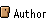
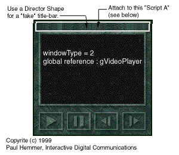

|  |
Using
Director
A customized
Movie-In-A-Window that can be dragged anywhere on the screen.
by Paul Hemmer
|
A question that has arisen several times over the past few months on the Lingo-L mailing list has to do with creating a MIAW (Movie-In-A-Window) that has the following properties:
It seems simple enough. What most developers find is that given the range of windowType values available, the MIAW ends up with a title-bar and is only moveable within the confines of the stage, or it has no title-bar, sits within the confines of the stage and cannot be dragged around at all. As a Director developer, you either have never needed this type of functionality (and therefore don't realize that it's not as straightforward as picking the appropriate windowType) or you have banged your head against the wall trying to figure out which windowType to use to get the desired results. Bang your heads no longer, the answer is here and is very easy to implement in your own Director applications. The technique presented here has been tested and works equally well on both MAC and PC. So how can this be accomplished? The process is actually quite simple and really involves only two steps:
Why must the MIAW have a windowType = 2? In a nutshell, a type-2 window is not actually a window at all - it's really a dialog box. Actual windows (the other windowType values available to you in Director) must exist within the boundaries of the "parent" window - in this case, the stage. This is not functionality unique to Director, it is a fundamental concept behind all windowed operating systems. By using a windowType of 2, you are actually making a ""Movie-In-A-Dialog" and dialog boxes can exist anywhere on the desktop regardless of the size/location of the main window which created it. If you can use Lingo to open a Director movie in a dialog box (windowType = 2) at any desired location on the screen, it would follow that you can also use Lingo to change it's location at runtime. So how do I do it? Basically, all you need to do now is attach the appropriate Lingo code to a "hot-spot" within your MIAW which tracks the position of the mouse while it is held down, and adjusts the rect of the window (actually, the dialog box!) accordingly. The code used in this example is based on Lingo syntax for versions of Director prior to 7.0 because at the time of this writing, the majority of DOUG readers have not yet upgraded to Director 7.0. Also, while I always am an advocate of using OOP in all Director development, this example uses a single movie-level Lingo script that takes a reference to a MIAW as a parameter. I have presented the technique like this so that it is accessible by the widest range of developers. If you are comfortable with OOP, I recommend wrapping this functionality into your MIAW class (parent script), but doing so is by no means necessary. By way of acknowledgment, I have modified this code slightly; however, I cannot take credit for its initial writing. A fellow developer named Dower Chin is responsible for writing this code the first time around. Nice work Dower. With that, on to the code! Paste the following into the script window and make sure it's a movie-level script.
on DragWindow dWhichMIAW
tell the stage
set mPt to point(the mouseH,the mouseV)
set origRect to the rect of dWhichMIAW
repeat while the mouseDown
set newPt to point(the mouseH, the mouseV)
set deltaPt to newPt - mPt
set newRect to offset(origRect,getAt(deltaPt,1), ¬
getAt(deltaPt,2))
set the rect of dWhichMIAW to newRect
tell dWhichMIAW to updateStage
updateStage
end repeat
end tell
end
As you can see, this script accepts a reference to a MIAW as a parameter (dWhichMIAW ) - and as such, works with whatever MIAW that you pass into it. However, the question still remains, "where do I call this script from?" The answer is quite simple. The diagram below illustrates an example of what your MIAW might look like. Notice how I have placed a Director shape member in a location to "fake" a title-bar.  Now, the only thing that you need to do is place the following script on your "fake title bar": Script A
global gVideoPlayer
- the global reference to your MIAW
on mouseDown
repeat while the mouseDown
tell the stage to DragWindow(gVideoPlayer)
end repeat
end
That's all you need. When you open your MIAW it will have no title-bar and you can click within your "fake title-bar" and drag it anywhere on the screen you like, regardless of stage size/boundaries. While this technique is really quite simple, the ability to create
floating movies that can be moved outside the stage is sure to open all
kinds of creative doors for you in your Director development.
Copyright (c) 1999, Paul Hemmer, Interactive Digital Communications,
Inc |
| Paul Hemmer received a BS in Information Technology from Rochester Institute of Technology. He is Senior Developer for a Rochester NY multimedia company. He primarily does Object Oriented Lingo development and lately has doing quite a bit of ASP programming. Paul is very much an advocate of OOP and always tries to push Director beyond its limits. He is committed to increasing awareness of the power and importance of the object oriented mindset and he does his best to make sure everybody on DirectL knows how he feels. Paul's real love is music. He is a bass player who happens to enjoy slinging Lingo by day. ;) |